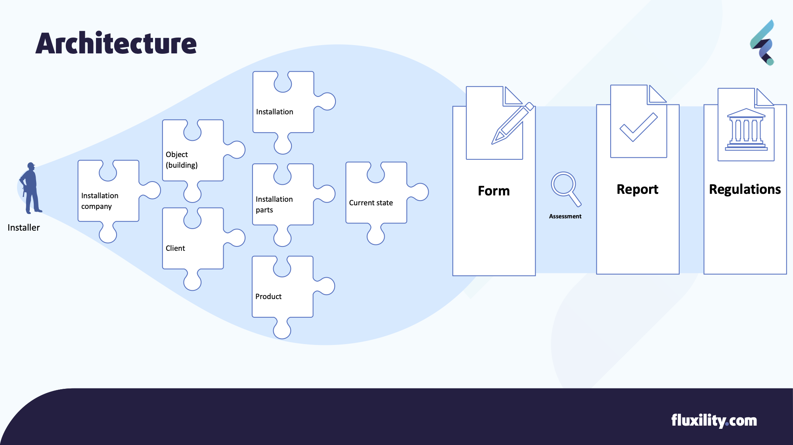

Architecture & Models¶
This section provides a basic structure and an insight in the Entities (including definitions) involved for which this Forms API is designed. Terms will be specified in both English and Dutch.
Table of Contents
Architecture¶
Forms are a means for an Installer to describe a situation and produce a Report that is in turn being required by some sort of Regulation. Regulations can be anything from actual law to in private defined certifications. The image below explains the flow and relevant/available information in setting up the (digital) Form and the reporting to relevant institutions. Each entity (piece) is explained below.
Entity definitions¶
Form (formulier / protocol /checklist)¶
The main entity will be the Form (eg. protocol, checklist etc) with checklist items for installing, maintaining or inspecting an Installation in an Object (ie. building). These forms are defined and maintained by experts or expert groups and are provided by for instance Techniek Nederland or ISSO. From a reporting perspective, forms should be designed in such a way that it will never ask questions that do not lead to data ending up in the report.
Report (inspectierapport / rapportage)¶
The Report is a (finalized) document including information on the checklist items provided by the filled out Form and a conclusion drawn upon this information. The Reports content must comply to rules as stated by the regulations.
Regulations (BRL, NTR, NTA, NEN, ISO)¶
Most of these forms are created with regulations in mind, or even created to fully comply with these regulations. Regulations can be governed by certifying instance, government etc.
Installation company (Installatiebedrijf, Installateur)¶
A company involved in (the execution of) installing, maintaining or inspecting the technical product(s) inside an Object (building). In order to carry specific tasks, installing companies and their personnel needs to be certified.
Installer (Monteur, Inspecteur, Installateur)¶
The actual person performing the work of installing, maintaining or inspecting a product. An Installer must always work for an Installation Company. On most occasions both Installer and Installation Company need to be certified to fulfill the task at hand. Keep in mind that the Installer (person) can be the only person working at the Installation Company.
Object (Building, Gebouw, Bouwwerk, Pand, Werkadres)¶
Most of the times an Object will be a building, but it could also be for instance a meadow (solar panels). Objects in the Netherlands are registered by the Kadaster and kept in a database called BAG. Each Object (and sub-object) is documented with a unique BAG ID. See https://www.kadaster.nl/zakelijk/producten/adressen-en-gebouwen/bag-api-individuele-bevragingen.
Client (Opdrachtgever)¶
The Client is the person or company who commissioned the installation, maintenance of inspection. In most casees this will be the owner or responsible person of the installation.
Note
In the near future this definition needs to be improved, because there are many roles of responsibility towards an installations. For instance the owner of the building, the owner of the installation, the user of the installation etc.
Installation (System, Installatie, Systeem)¶
An Installation is a Product that is installed and serving it’s purpose in or on an Object.
Installation Parts (Installatie-onderdeel, Sub-systeem)¶
Installations form a hierarchy (tree), where each Installation might consist of sub-installations. For instance
- Central Heating System consist
- Heat generator
burner
expansion vessel
Radiator
Gas transport towards generator
Water transport to radiators
Maintenance or inspection activities can be performed for the complete installation or specifically aimed at just one sub-installation.
Product data (stored in 2BA)¶
Actual information on products (non-installed) can be found in the 2BA Product database. It holds a rich set of products with all their features described (in ETIM), making it easy to uniformly enter information on the installation that is being inspected. The product information is provided to 2BA by the manufactures themselves and therefore quite accurate. This data can be used to prefill forms when describing the installed product.
Current State¶
The whole reason for filling out the form will be the Current State of the Installation. This covers anything from ‘having a new Installation installed’ to ‘a leakage’ to ‘actual power consumption compared to factory standards’ and of course the amount CO and CO2 being produced by the installation.
Classification systems¶
NL/SFB¶
There is a Dutch classification standard for describing types of installations and product. It’s a determination to with each level becoming more specific. Level one is ‘heating’, ‘cooling’ etc, level two can be ‘central’, ‘local’ etc, and the deepest can be type of fuel used. See https://ketenstandaard.nl/standaard/nl-sfb/.
ETIM¶
A second standard for product classification is ETIM. Where NL/SFB is focussed mainly on creating groups of products, ETIM also aims at defining all properties of products in a standardised way. See https://www.etim-international.com/.